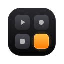

Política de privacidad
Última actualización: 15 de octubre de 2026 (versión 1.0) · Autor: Miguel Mogrovejo
Qué hace Botonazo
Botonazo es una extensión de Chrome que convierte tu celular en un deck de botones personalizable. Configuras los botones en la extensión y, al escanear un código QR, tu celular abre esta página web y se conecta con la extensión. Cada botón ejecuta en Chrome la acción que elegiste: capturar o grabar la pestaña, mostrar la pantalla en el celular, cambiar de pestaña o de ventana, controlar el video que suena, mostrar carteles, escribir textos, controlar OBS Studio o llamar a un webhook.
Datos que no recopilamos
Botonazo no tiene servidores propios ni base de datos. No recopilamos tu nombre, correo, historial de navegación, contenido de las páginas, capturas, grabaciones, ubicación ni ningún otro dato personal.
Qué viaja entre tu computadora y tu celular
Todo viaja por una conexión WebRTC de punto a punto entre tus dos dispositivos, cifrada de extremo a extremo (DTLS), y nunca llega al desarrollador:
- El diseño de tu deck (nombres, íconos y colores de los botones). Los detalles de cada acción —direcciones de webhooks, textos, contraseñas— no se envían al celular: el celular solo envía el identificador del botón pulsado y la extensión resuelve la acción.
- El título de la pestaña controlada y, si abres la lista de pestañas, el título y el dominio de las pestañas abiertas.
- Las capturas de pantalla que pides enviar al celular y las imágenes o el video de la pestaña cuando usas «Ver pantalla en el celular».
Cómo se establece la conexión
- Se usa el servidor público de señalización de PeerJS. Solo recibe un identificador de sesión aleatorio y los datos técnicos de red necesarios para conectar los dispositivos (por ejemplo, direcciones IP). No recibe el contenido de lo que se envía.
- Si tu red impide la conexión directa, el tráfico cifrado pasa por el servidor de retransmisión (TURN) de Cloudflare, que no puede leerlo. Para usarlo, la extensión y el celular piden credenciales temporales a un pequeño servicio del autor alojado en Cloudflare, que no guarda ningún dato.
- El código QR contiene una clave secreta que solo conocen tu computadora y los dispositivos que lo escanean. De forma predeterminada se genera un código nuevo en cada sesión, y puedes renovarlo en cualquier momento para desconectar a todos.
Capturas y grabaciones
Las capturas y los videos se guardan en la carpeta Descargas › Botonazo de tu computadora y, si lo eliges, se envían directamente a tu celular. Botonazo no los sube a ningún servidor. La grabación de la pestaña usa el permiso de captura de Chrome y solo empieza cuando pulsas el botón; la grabación de la pantalla completa o de una ventana siempre pasa por el selector de Chrome, donde eliges qué compartir, y Chrome muestra un aviso mientras dura.
OBS Studio y webhooks
- Si activas el control de OBS, la extensión se conecta al servidor WebSocket de OBS en el equipo que indiques (normalmente tu propia computadora). La contraseña se guarda solo en este equipo, en el almacenamiento local de la extensión, y no se sincroniza.
- Los botones de tipo webhook envían una petición a la dirección que tú configuras, con el contenido que tú escribes, únicamente cuando pulsas el botón.
Acceso a las páginas web
La extensión pide acceso a los sitios web para ejecutar tus botones en la pestaña que estás viendo: mostrar carteles y avisos encima de la página, enviar atajos de teclado y texto, desplazarla y controlar sus videos. Los scripts de Botonazo solo se insertan en una pestaña cuando pulsas un botón que lo necesita. Botonazo no lee, guarda ni envía el contenido de las páginas.
Almacenamiento local
- En Chrome: tu deck, el identificador de sesión y la contraseña de OBS se guardan con
chrome.storage.local. Los ajustes (formato de capturas, calidad de video, etc.) se guardan conchrome.storage.syncy pueden sincronizarse con tu cuenta de Chrome si tienes la sincronización activada. - En el celular: el identificador de sesión, una copia del diseño de tu deck y tus preferencias se guardan en el almacenamiento local del navegador para reconectarte automáticamente. Puedes borrarlos con «Olvidar esta computadora». Las capturas recibidas solo existen mientras la página está abierta, salvo que las guardes.
Permisos de la extensión
- Acceso a los sitios web: ejecutar tus botones en la pestaña (carteles, atajos, texto, desplazamiento, video) y capturar la pestaña visible.
- Captura de pestañas (
tabCapture): grabar la pestaña y mostrarla en vivo en tu celular cuando pulsas esos botones. - Descargas (
downloads): guardar tus capturas y grabaciones en la carpeta Descargas. - Ejecución de scripts (
scripting): insertar los scripts de Botonazo en la pestaña solo cuando un botón lo necesita. - Documento en segundo plano (
offscreen): mantener la conexión WebRTC con el celular, grabar el video y copiar texto al portapapeles. - Almacenamiento (
storage): guardar tu deck, tus ajustes y el identificador de sesión.
Cambios y contacto
Si esta política cambia, se actualizará en esta misma página. Para dudas o sugerencias, escribe al autor, Miguel Mogrovejo, a través de github.com/mjmc4498.